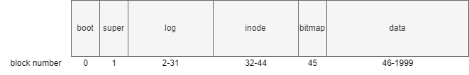

disk (磁盘)
布局
sector: 磁盘存取的最小单位。在xv6中为1kb
block: 文件系统存取的最小单位，为sector的任意整数倍。在xv6中为1kb

- boot block: 启动操作系统的代码
- super block: 描述文件系统信息
- log blocks:
- inode blocks: 存放所有inode
- bitmap block: 记录data block是否空闲
- data blocks: 存储文件和目录的内容
supber block
// kernel/fs.h
struct superblock {
uint magic; // Must be FSMAGIC
uint size; // Size of file system image (blocks)
uint nblocks; // Number of data blocks
uint ninodes; // Number of inodes.
uint nlog; // Number of log blocks
uint logstart; // Block number of first log block
uint inodestart; // Block number of first inode block
uint bmapstart; // Block number of first free map block
};
#define FSSIZE 2000 // size of file system in blocks
#define MAXOPBLOCKS 10 // max # of blocks any FS op writes
#define LOGSIZE (MAXOPBLOCKS*3) // max data blocks in on-disk log
#define NINODES 200
// kernel/fs.c
// there should be one superblock per disk device,
// but we run with only one device
struct superblock sb;
// Init fs
void
fsinit(int dev) {
readsb(dev, &sb);
if(sb.magic != FSMAGIC)
panic("invalid file system");
initlog(dev, &sb);
}
// Read the super block.
static void
readsb(int dev, struct superblock *sb)
{
struct buf *bp;
bp = bread(dev, 1);
memmove(sb, bp->data, sizeof(*sb));
brelse(bp);
}
buffer cache
struct buf
// kernel/buf.h
struct buf {
int valid; // has data been read from disk?
int disk; // does disk "own" buf?
uint dev;
uint blockno;
struct sleeplock lock;
uint refcnt; //
struct buf *prev; // LRU cache list
struct buf *next;
uchar data[BSIZE];
};
bcache
// kernel/bio.c
struct {
struct spinlock lock;
struct buf buf[NBUF];
// Linked list of all buffers, through prev/next.
// Sorted by how recently the buffer was used.
// head.next is most recent, head.prev is least.
// 双向循环链表
struct buf head;
} bcache;
bread()
// kernel/bio.c
struct buf*
bread(uint dev, uint blockno)
{
struct buf *b;
b = bget(dev, blockno);
if(!b->valid) {
virtio_disk_rw(b, 0);
b->valid = 1;
}
return b;
}
bget()
// kernel/bio.c
static struct buf*
bget(uint dev, uint blockno)
{
struct buf *b;
acquire(&bcache.lock);
// Is the block already cached?
for(b = bcache.head.next; b != &bcache.head; b = b->next){
if(b->dev == dev && b->blockno == blockno){
b->refcnt++;
release(&bcache.lock);
acquiresleep(&b->lock);
return b;
}
}
// Not cached.
// Recycle the least recently used (LRU) unused buffer.
// 逆序遍历
for(b = bcache.head.prev; b != &bcache.head; b = b->prev){
if(b->refcnt == 0) {
b->dev = dev;
b->blockno = blockno;
// 还未从磁盘读取数据
b->valid = 0;
b->refcnt = 1;
release(&bcache.lock);
acquiresleep(&b->lock);
return b;
}
}
panic("bget: no buffers");
}
brelese()
// kernel/bio.c
void
brelse(struct buf *b)
{
if(!holdingsleep(&b->lock))
panic("brelse");
releasesleep(&b->lock);
acquire(&bcache.lock);
b->refcnt--;
if (b->refcnt == 0) {
// no one is waiting for it.
// b移动到链表表头
b->next->prev = b->prev;
b->prev->next = b->next;
b->next = bcache.head.next;
b->prev = &bcache.head;
bcache.head.next->prev = b;
bcache.head.next = b;
}
release(&bcache.lock);
}
logging
why
-
case 1
// kernel/sysfile.c static struct inode* create(char *path, short type, short major, short minor) { ... if((ip = ialloc(dp->dev, type)) == 0){ iunlockput(dp); return 0; } <- crashed here, what will happen ... }crash会导致我们会丢失这个inode
-
case 2
在为文件分配block时
- 从 data blocks 中找到一块空闲 block
- 将该 block number 写入到文件的 inode 中
- 在bitmap中标记该block已使用
如果2，3之间 crash 会怎么样
crash 可能会导致这个 block 被分配给多个文件
fatal !
what
buffer cache 之上的一种机制，用来保证系统调用的原子性，同时能够在系统 crash 之后进行 Fast Recovery
how
// kernel/log.c
struct logheader {
int n;
int block[LOGSIZE];
};
struct log {
struct spinlock lock;
int start; // start of log blocks
int size; // number of log blocks
int outstanding; // how many FS sys calls are executing.
int committing; // in commit(), please wait.
int dev;
struct logheader lh;
};
struct log log;

log 实现
-
log write4
当需要更新 inode block 或 bitmap block 或 data block 时，我们并不直接写入到磁盘对应的位置，而是记录一条 log 到磁盘的 log 分区
// kernel/log.c void log_write(struct buf *b) { int i; acquire(&log.lock); if (log.lh.n >= LOGSIZE || log.lh.n >= log.size - 1) panic("too big a transaction"); if (log.outstanding < 1) panic("log_write outside of trans"); // 要写入的 block number 已存在 for (i = 0; i < log.lh.n; i++) { if (log.lh.block[i] == b->blockno) // log absorption break; } log.lh.block[i] = b->blockno; if (i == log.lh.n) { // Add new block to log? bpin(b); log.lh.n++; } // i != log.lh.n // log 已存在并且未 commit，nothing to do release(&log.lock); } -
commit
// kernel/log.c static void commit() { if (log.lh.n > 0) { write_log(); // Write modified blocks from cache to log write_head(); // Write header to disk -- the real commit install_trans(0); // Now install writes to home locations log.lh.n = 0; write_head(); // Erase the transaction from the log } }对单个 disk block 的读写具有原子性
commit 可保证系统调用的原子性
// kernel/log.c static void write_log(void) { int tail; for (tail = 0; tail < log.lh.n; tail++) { struct buf *to = bread(log.dev, log.start+tail+1); // log block struct buf *from = bread(log.dev, log.lh.block[tail]); // cache block // 将 log 中记录的缓冲块号的缓冲块复制到 log 缓冲块 memmove(to->data, from->data, BSIZE); // 将 log 缓冲块写出到磁盘 bwrite(to); // write the log brelse(from); brelse(to); } }// kernel/log.c static void write_head(void) { struct buf *buf = bread(log.dev, log.start); struct logheader *hb = (struct logheader *) (buf->data); int i; // 将内存中的 logheader 复制到 log head 的缓冲块 hb->n = log.lh.n; for (i = 0; i < log.lh.n; i++) { hb->block[i] = log.lh.block[i]; } // 将 log head 的缓冲块写出到磁盘 bwrite(buf); brelse(buf); } -
install trans
// kernel/log.c static void install_trans(int recovering) { int tail; for (tail = 0; tail < log.lh.n; tail++) { struct buf *lbuf = bread(log.dev, log.start+tail+1); // read log block struct buf *dbuf = bread(log.dev, log.lh.block[tail]); // read dst memmove(dbuf->data, lbuf->data, BSIZE); // copy block to dst bwrite(dbuf); // write dst to disk if(recovering == 0) bunpin(dbuf); brelse(lbuf); brelse(dbuf); } } -
clean log
// kernel/log.c static void commit() { ... log.lh.n = 0; write_head(); // Erase the transaction from the log } -
recovery
// kernel/log.c static void recover_from_log(void) { read_head(); install_trans(1); // if committed, copy from log to disk log.lh.n = 0; write_head(); // clear the log }
usage
uint64
sys_open()
{
...
// 合法性检查
begin_op();
...
log_write();
...
log_write();
...
end_op();
...
}
// kernel/log.c
void
begin_op(void)
{
acquire(&log.lock);
while(1){
// 有系统调用正在 commit
if(log.committing){
sleep(&log, &log.lock);
// 可能超出 log 大小限制
} else if(log.lh.n + (log.outstanding+1)*MAXOPBLOCKS > LOGSIZE){
// this op might exhaust log space; wait for commit.
sleep(&log, &log.lock);
} else {
log.outstanding += 1;
release(&log.lock);
break;
}
}
}
// kernel/log.c
void
end_op(void)
{
int do_commit = 0;
acquire(&log.lock);
log.outstanding -= 1;
if(log.committing)
panic("log.committing");
// 所有系统调用都已经 end_op()
if(log.outstanding == 0){
do_commit = 1;
log.committing = 1;
} else {
// begin_op() may be waiting for log space,
// and decrementing log.outstanding has decreased
// the amount of reserved space.
wakeup(&log);
}
release(&log.lock);
// if log.outstanding != 0
// noting to do
if(do_commit){
// call commit w/o holding locks, since not allowed
// to sleep with locks.
commit();
acquire(&log.lock);
log.committing = 0;
wakeup(&log);
release(&log.lock);
}
}